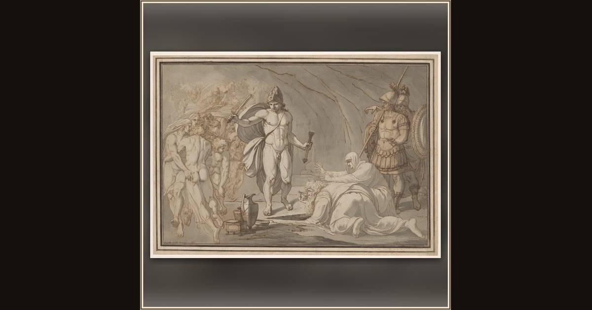

Odysseus, at the Doors of Hades, Meets the Shades of Tiresias and Anticlea
Johann Heinrich Lips, Swiss, 1758–1817 · 1785 · The Art Institute of Chicago · Chicago, USA
At the edge of the Land of the Dead, Odysseus meets the blind prophet Tiresias and the shade of his own mother, Anticlea. Explore its place in Book XI of the Odyssey.